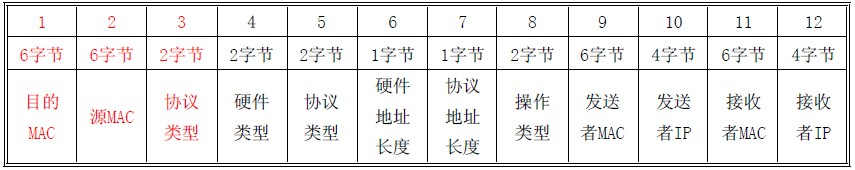
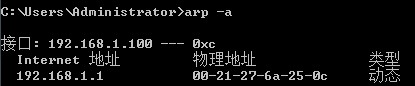
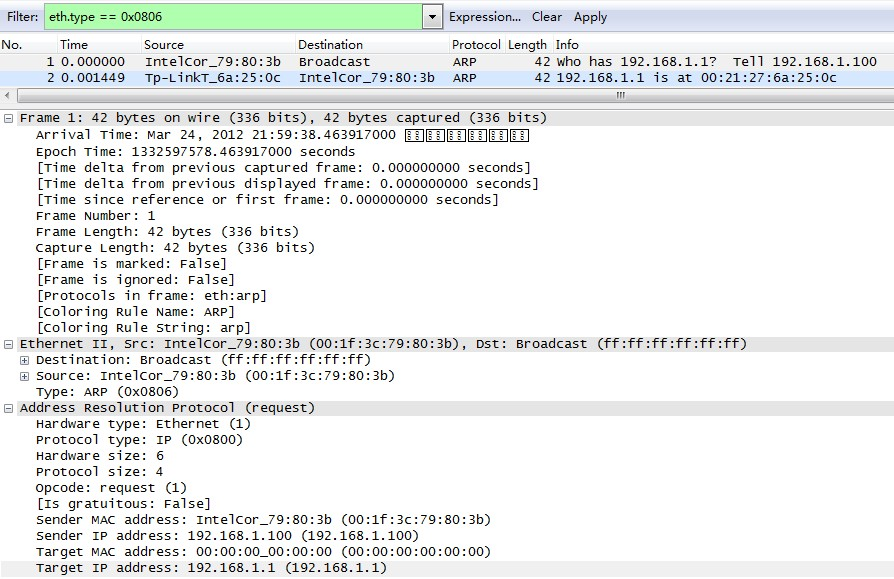

地址解析协议
假设你叫小明(本地主机)，住在一个大院子(本地局域网)，有很多邻居(网络邻居)，门口有个看门的李大爷(网关)。当你想要找院子里的某个小朋友玩，只要大喊一声他的名字(ping),他听到了就会回你。你要找院子里的人，只要知道他家门牌号码(MAC地址)，就可以找到他。你想找外面的人，但妈妈不让你出去，必须通过李大爷帮你联系。如果你要找另一个院子里(跨域网络)的同学小强(远程主机)，他的妈妈也不让他出去。那里也有一个看门的王大爷(另一个网关)，小明要找小强，必须通过李大爷联系王大爷(路由)。这两个院子里的故事太多，以后慢慢讲。。。
要理解网络协议，最好使用协议分析器对数据包进行分析，wireshark是不错的选择。
 简单的说，ARP协议回答了一个问题 IP是XX.XX.XX.XX(图中的192.168.1.1)的网卡，他的MAC/物理地址(图中的00:21:27:6a:25:0c)是什么。MAC地址是网卡绑定的唯一标识符，局域网内的主机之间互相通信，必须通过MAC地址。系统会对ARP数据进行缓存，不过10分钟后会重建。在cmd下输入arp -a可以查看。

下面是ARP报文的结构

ARP的过程如下，假设A,B,C为局域网的3台主机
- 当A要访问B时，此时ARP缓存表为空，所以要进行一次广播，图中目标为全f，确定B的地址。
- B 和C都会收到这个广播。因为是广播，所以网络上的任何一个节点都要对该帧进行进一步处理。于是C检查该帧的协议类型，发现是0x0806H(ARP协议)，便把该帧的帧头去掉，检查其IP头，发现是发向192.168.1.1 的ARP 报文而不是自己的，于是将该报文丢弃。
- B收到这个帧后发现是个广播，所以也会检查该帧的协议类型，发现是ARP协议，便把该帧的帧头去掉，露出IP头，发现该报文是发给自己的，就再检查操作类型，发现是请求，于是便读取该帧的发送者MAC 和发送者IP，把它们作为ARP 响应的目的MAC和目的IP 发送回去，这就是为什么ARP 请求是广播，而响应是单播的原因。图中目标MAC为全0，就是留空让接受者填写。
- 当A收到来自B的ARP单播响应时，首先检查该帧的目的MAC 是不是自己，发现匹配，于是再检查协议类型，发现是ARP 协议，于是去掉二层帧头，送到IP 层，IP 协议发现目的IP地址是自己，于是进一步检查操作类型，发现是响应，于是读取发送者MAC 和IP，把它们记录进ARP缓存表。
知道了原理，我们可以通过伪造ARP响应，进行ARP欺骗，使得请求的主机相信属于别人的IP是你的。如果伪造成网关，那么别人自然不能上网了，有兴趣的同学可以慢慢研究…至于防御也很简单，本地arp -s绑定，安装arp防火墙，在路由器绑定ip-mac-端口。